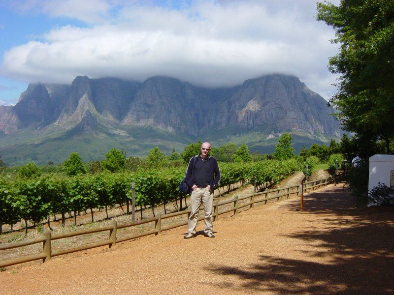

After breakfast walked to ATM & supermarket.
Drove to Vergelegen, approx 45km from Cape Town along the N2. Drive took about 30 minutes. The N2 is lined with shanty houses.
Entry to Vergelegen was 10R per person. 1 hour tour of winery cost 10R each.
Wine tasting from 2R to 10R depending on wine plus 1R for biscuits. Tasting was at our own pace sitting outside at a table and was very relaxed with no pressure to purchase.
Purchased two bottles of the Sauvignon Blanc 2005 which had a very fruity smell and good lingering taste. These cost 65R each.
Vin de florence 2006 was too acidic tasting. I wasn’t particularly fussed with the Chardonnay 2005 or the Chardonay Reserve 2004.
Then drove to Delaire for lunch, driveway up to Delaire is lined with trees through a vine field, a great entrance for a vineyard. Spectacular views of the mountains from our table. I had carpacio of springbok for starter and Yamini had orange and butternet soup. I then had Ostrich steak for main course. Yamini had Bobotie. Total was 300R. inc 2 x grapetizers. Food was very good.
Drove up the road to Thelema which has a very long driveway with a very dramatic backdrop of mountains.Tasting at Thelema was more rushed than the Vergelegen experience. The Merlot was very nice and purchased a bottle for 90R.
Drove to Franschoek, a very picturesque town. Not enough time for further tastings.
Drove back to Cape Town via N1.
Walked down the road to find a place to eat. Stopped at Harveys at the Winchester Mansion hotel on the waterfront.
Service here was excellent as was the food. We were served with a complementary appetiser in the form of aubergine rissotto. For starter I had a poached pear and grated parmesan with blue cheese dressing on salad leaves which was gorgeous and more of a dessert than a starter. Yamini opted for carrot and ginger soup. For mains I had line fish of the day (blue fish) grilled with butternut risotto with a lemony sauce. Yamini had baked blue fish with basil mash.
For wine we had Constantia Uitsig Sauvignon Blanc 2005 which was very fruity and refreshing.
For dessert I had Grand Marnier Souffle which was absolutely gorgeous. Followed up with a Constantia Klein dessert wine! Total 464R plus 100R tip for our waiter who was very attentive and entertaining!
{kind=link}